기상기사 (2010-07-25 기출문제)
1과목: 기상관측법
1. 구름 관측 순서가 올바르게 기술된 것은?
- 낮은 구름에서 높은 구름을 관측한 후 전운량을 관측
- 전운량 관측 후 높은 구름에서 낮은 구름으로
- 높은 구름에서 낮은 구름을 관측한 후 전운량을 관측
- 전운량을 관측한 후 낮은 구름에서 높은 구름으로
(정답률: 80%)

2. 기상위성에서 적외선 영상에 가장 많이 이용되는 파장은?
- 약 0.1 ~ 0.6 μm
- 약 1.0 ~ 1.6 μm
- 약 10.0 ~ 12.0 μm
- 약 100.0 ~ 120.0 μm
(정답률: 72%)
3. 기상레이더의 밴드와 파장의 길이가 틀린 것은?
- UHF : 1.7 ~ 2.5 cm
- S : 8 ~ 15 cm
- C : 4 ~ 8 cm
- X : 2.5 ~ 4 cm
(정답률: 72%)
4. 지구대기 상단에서 태양광선에 수직인 수평며에서 받는 태양상수(太陽常數, solar constant)는?
- 0.10 cal·cm-2·min-1
- 1.98 cal·cm-2·min-1
- 6.78 cal·cm-2·min-1
- 8.59 cal·cm-2·min-1
(정답률: 79%)
5. WMO 기상측기관측법에 제시된 고층기상요소와 오차허용범위가 틀린 것은?
- 기온 – 지상에서 100 hPa 까지 ±0.5℃
- 기압 – 지상에서 5 hPa 까지 ±1 hPa
- 풍속 – 지상에서 100 hPa 까지 ±1 m/s
- 풍향 – 지상에서 100 hPa 까지 풍속이 15 m/s 미만인 경우 ±10°
(정답률: 70%)
6. 대기현상 중 연무나 풍진과 같이 건조한 미립에 의해 생기는 현상은?
- 대기수상(hydrometeors)
- 대기진상(lithometeors)
- 대기광상(photometeors)
- 대기전상(electrometeors)
(정답률: 89%)
7. 다음 중 풍속 측정의 원리로 이용되지 않는 것은?
- 풍배의 회전
- 피토관(Pitot tube)
- 쌍금속(bimetal)
- 초음파(ultrasonic)
(정답률: 74%)
8. 적설상당수량(water equivalent of snow cover)에 대한 설명이 틀린 것은?
- 어느 장소의 적설을 전부 녹였을 때의 물의 깊이이다.
- 적설으 물로 녹여서 1cm2 당의 중량으로 정의해도 좋다.
- 눈이 내린 만큼을 수자원으로 이용할 수 있다는 의미이다.
- 강수량과 같이 mm 단위로 표현해도 좋고, 1cm2 당의 그램 수, 즉 g/cm2 으로 이용하 수도 있다.
(정답률: 77%)
9. 다음 중 상층운으로만 구성된 것은?
- Cc, Cs
- Ci, As
- Cs, As
- As, Ac
(정답률: 83%)
10. “AIREP”으로 표시된 전문은 어디에서 관측·보고하는 전문인가?
- 항해 중인 선박에서 선장이나 선원이 관측·보고하는 것
- 지상 관측소에서 관측·보고 하는 것
- 고층 관측소에서 관측·보고하는 것
- 비행중인 항공기에서 조종사나 종사자가 관측·보고하는 것
(정답률: 80%)
11. 다음 중 상대습도에 대한 설명이 틀린 것은?
- 기온이 상승하면 상대습도는 하강한다.
- 절대습도와는 반비례한다.
- 온도가 같으면 노점온도가 높을수록 상대습도도 높다.
- 기온노점차가 0 이면 상대습도는 100% 이다.
(정답률: 73%)
12. CW 레이더(Radar)의 설명으로 적합하지 않은 것은?
- 연속파(continuous waves)를 바신하는 레이더이다.
- 좁은 대역폭(bandwidth)으로 가능하다.
- 변조(modulated)된 파만을 사용하여야 한다.
- 낮은 출력(low power)으로 가능하다.
(정답률: 74%)
13. 일반 기상관측소에서 시정관측 시 시정이 방향별로 다를 때 취하는 것은?
- 우시정
- 최대시정
- 최소시정
- 평균시정
(정답률: 75%)
14. 대형 증발계에 대한 설명이 틀린 것은?
- 대형증발계의 남쪽에 수위측정기를 설치한다.
- 강수량이 많을 때는 적당히 배수해서 수심을 20 cm 정도로 유지한다.
- 새나 동물의 접근으 막기 위해 철망을 설치한다.
- 겨울 결빙기간에는 관측을 중지한다.
(정답률: 67%)
15. 고층대기의 기온, 기압, 습도, 바람을 관측하는 대기관측기기는?
- 도플러레이더
- 레일리라이더
- 라디오존데
- 레윈존데
(정답률: 86%)
16. 종관기상관측에서 시정관측에 있어 적합하지 않은 것은?
- 목표는 각 방향 모두 균등하게, 되도록 많이 선택해서 관측점으 기준으로 시정목표원을 만들어 주는 것이 좋다.
- 시정목표물은 점정, 또는 되도록 검은 것으로 그 배경이 하늘 또는 하얀 것을 선택한다.
- 시정목표물이 불확실할 때는 쌍안경을 사용하여 관측하여야 한다.
- 배경이 하늘이 아닌 것을 목표로 할 때에는 목표에서 배경까지의 거리가 관측점에서 목표까지 반절 이상 되는 것을 선택한다.
(정답률: 89%)
17. 서리를 설명한 내용 중 옳은 것은?
- 대기 중의 수증기가 응결(condensation)된 것
- 대기 중의 수증기가 승화(sublimation)된 것
- 대기 중의 수증기가 응결된 후 빙결(freezing)된 것
- 대기 중의 수증기가 기화(vaporization)에 의한 것
(정답률: 62%)
18. 기상전보에서 일반적으로 풍향을 나타내는 방위는?
- 8 방위
- 16 방위
- 32 방위
- 36 방위
(정답률: 63%)
19. 황사 관측 라이더에 대한 설명으로 옳지 않은 것은?
- 발사된 레이저 빔이 대기중에 부유하는 황사를 포함한 에어러솔에 의해 흡수된 후 돌아오는 빛을 수신하여 이용한다.
- 대기 중의 분자, 먼지입자와 구름입자에 의해 산란 또는 흡수되는 빛의 특성을 이용한 것이다.
- 이중편광 라이더 시스템을 이용하면 황사가 구형인지 비구형인지를 구분할 수가 있다.
- 송신부, 수신부, 신호 및 자료처리 분석부로 구성되어 있다.
(정답률: 65%)
20. 감수현상이 전혀 없는 경우의 기입 방법은?
- -
- 0
- 0.0
- 결측
(정답률: 58%)
2과목: 대기열역학
21. 단열선도(skew T-log P diagram)에는 기본 등치선이 몇 가지 그려져 있는가? (단, 층후 계산척 제외)
- 3
- 5
- 7
- 10
(정답률: 88%)
22. 열역학선도상에서 폐곡선으로 이루어진 면적이 에너지의 단위로 되지 않는 선도는?
- Clapeyron 선도
- Tephigram
- Emagram
- Stüve 선도
(정답률: 71%)
23. 상당 온위와 기온과의 관계로 옳은 것은?
- 상당 온위가 기온보다 높다.
- 기온이 상당 온위보다 높다.
- 상당 온위와 기온은 같다.
- 서로 관계가 없다.
(정답률: 67%)
24. Γ 를 주위의 기온감율, Γd 를 건조단열감율, Γs 를 포화단열감율이라 할 때 조건부불안정은?
- Γ ＞ Γd
- Γ ＞ Γs ＞ Γd
- Γd ＞ Γ ＞ Γs
- Γ ＜ Γs
(정답률: 70%)
25. 상공에서 구름이 발생하려면 공기의 냉각이 필요하다. 이러한 대기의 주된 냉각원인은?
- 복사냉각
- 찬 공기와의 혼합
- 단열압축
- 단열팽창
(정답률: 80%)
26. 대기중에서 내부에너지의 변화는 어떻게 표현되는가? (단, Cv : 정적비열, T : 온도, Cp : 정압비열, p : 기압, V : 체적, α : 비적)
- Cv · dT
- Cp · dT
- p · dV
- p · dα
(정답률: 67%)
27. 건조대기에 대하여 정적으로 안정한 대기는?
- 온위가 연직으로 증가한다.
- 온위가 연직으로 감소한다.
- 온위가 연직으로 일정하다.
- 기온이 연직으로 감소한다.
(정답률: 65%)
28. 임의의 행성에서 중력가속도가 10ms-2이고 균지한 대기의 평균 기온감율이 4K/100m 일 때 이 행성 대기의 평균 기체상수는?
- 250 JK-1kg-1
- 400 JK-1kg-1
- 600 JK-1kg-1
- 1000 JK-1kg-1
(정답률: 50%)
29. 물에 대한 T-e diagram에서 기체상태를 나타내는 영역은?
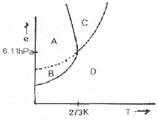
- A
- B
- C
- D
(정답률: 64%)
30. 포화혼합비 값에 대한 설명 중 맞는 것은?
- 압력이 감소할수록 작아진다.
- 온도가 감소할수록 커진다.
- 포화증기압이 증가할수록 커진다.
- 압력과 온도에 무관하다.
(정답률: 85%)
31. 기온(T)과 물에 대한 포화 수증기압(Pv)의 관계를 그림으로 표시하면?
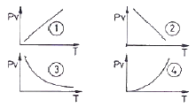
- ①
- ②
- ③
- ④
(정답률: 47%)
32. 다음 중 Skew T – log P 선도에서 등치선의 기울어진 방향을 왼쪽부터 오른쪽으로 차례대로 나열한 것은?
- 건조단열선, 포화단열선, 등포화혼합비선, 등온선
- 건조단열선, 포화단열선, 등온선, 등포화혼합비선
- 포화단열선, 건조단열선, 등포화혼합비선, 등온선
- 포화단열선, 건조단열선, 등온선, 등포화혼합비선
(정답률: 53%)
33. 압력 P, 온도 T 인 공기를 습윤단열 과정으로 1000 hPa 고도며까지 가져왔을 때, 이 공기의 온도는?
- 습구온도
- 상당온도
- 습구온위
- 상당온위
(정답률: 65%)
34. 물이 증바하여 수증기로 변화한다. 일정한 압력 하에서 이 상의 변화가 나타난다면 이와 관련된 잠영른 무엇과 같은가?
- 내부에너지의 변화량
- 엔트로피의 변화량
- 엔탈피의 변화량
- 자유에너지의 변화량
(정답률: 60%)
35. 대류 불안정도(Convective Instability)에 대한 설명으로 옳은 것은?
- 공기층에 연직 쉬어(shear)가 존재할 때 공기층이 갖는 불안정도
- 공기 덩어리가 습윤 단열적으로 상승하였을 때 갖는 불안정도
- 공기 덩어리가 건조 단열적으로 상승하였을 때 갖는 불안정도
- 공기층에 모두 포화될 때까지 상승한 후 공기층이 갖게 되는 불안정도
(정답률: 54%)
36. 대기가 정적으로 매우 안정할 때, 특히 역전층이 생길 때 나타나는 현상은?
- 신기루
- 새벽안개
- 적운
- 뇌우
(정답률: 85%)
37. 다음 중 하층 대기에서 그 구성비가 가장 적은 것은?
- 오존
- 탄산가스
- 아르곤
- 산소
(정답률: 59%)
38. 정적으로 안정한 대기에서 부력진동수의 특징이 옳게 설명된 것은?
- 허수로 나타난다.
- 음의 값을 갖는다.
- 양의 값을 갖는다.
- 0 이 된다.
(정답률: 50%)
39. 온위(potential temperature : θ)를 구하는 식으로 맞는 것은? (단, k는 R/CP 이다.)
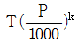
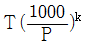
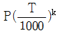
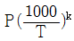
(정답률: 78%)
40. 과냉각 수면에 대한 포화증기압(ew)과 얼음면에 대한 포화증기압(ei)의 관계 중 옳은 것은?
- ew ＞ ei
- ew = ei
- ew ＜ ei
- 특별한 연관성이 없다.
(정답률: 65%)
3과목: 대기운동학
41. 적운 군집의 대표적인 크기는?
- 1 km
- 10 km
- 100 km
- 1000 km
(정답률: 93%)
42. 다음 중 Froude number의 정의는? (단, U, L은 각각 수평속도 및 거리 규모, g는 중력, Ω는 지구 각속도)
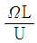
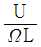
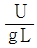
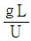
(정답률: 74%)
43. Rossby에 의한 장파이송속도(C)는 다음과 같이 나타난다. 이 때 장파가 서쪽에서 동쪽으로 이동하는 경우에 해당하는 것은? (단, U는 평균대상풍속, L은 파장, β는 코리올리 인자의 위도 변화)
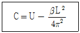
- U ＞ C ＞ 0
- U ＞ C = 0
- U ＞ 0 ＞ C
- C ＞ 0 ＞ U
(정답률: 78%)
44. (x, y, z)좌표계에서의 질량 연속 방정식은? (단, ρ는 공기밀도,
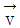
속도 벡터, t는 시간)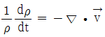
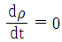
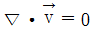
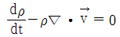
(정답률: 59%)
45. 연직운동 방정식의 부력항에 있는 밀도를 제외하고 모든 밀도를 일정하다고 가정하는 근사는?
- 지균근사
- 정역학근사
- 부시네스크근사
- 경도풍근사
(정답률: 77%)
46. 대기경계층내의 풍속의 연직 분포에 큰 영향을 미치지 않는 것은?
- 고도
- 지표면 거칠기 길이
- 마찰속도
- 습도
(정답률: 95%)
47. 지상 저기압의 중심으로 바람이 수령하는 주된 이유는?
- 전향력
- 전선
- 마찰
- 기온분포
(정답률: 53%)
48. 준수평운동(Quasi – horizontal motion)에 대한 설명 중에서 틀린 것은?
- 등지오포텐셜 면에 거의 평행하다.
- 대규모 공기의 흐름은 준수평적이다.
- 코리올리힘은 별로 중요하지 않다.
- 공기의 가속도는 무시한다.
(정답률: 93%)
49. 지균풍을 구할 때 도입된 가정이 아닌 것은?
- 지면과의 마찰을 무시
- 구심 가속도를 무시
- 관성 가속도를 무시
- 코리올리힘에 의한 가속도를 무시
(정답률: 84%)
50. Rossby 파의 이동속도는?
- 보통 풍속과 같은 속도이다.
- 보통은 하루에 경도 50도 정도 진행한다.
- 보통은 풍속의 50% 정도로 진행한다.
- 후퇴할 수는 없다.
(정답률: 50%)
51. 다음 중 플럭스가 높이에 따라 일정한 층은?
- 지표층(surtace layer)
- 잔여층(residual layer)
- 혼합층(miced layer)
- 안정경계층(stable boundary layer)
(정답률: 85%)
52. 기류에 수직인 방향 쪽의 운동방정식이 아래와 같다면 식에서
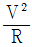
은 무엇을 나타내는가? (단, V : 풍속, R : 기류의 곡률반경, f : 코리올리 인자, ρ : 공기밀도, P : 기압, n : 기류에 수직방향 쪽의 거리)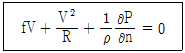
- 전향력
- 기압경도력
- 원심력
- 마찰력
(정답률: 75%)
53. 연직 소용돌이도(vorticity)의 시간적 변화와 직접 관련이 없는 항은?
- 기압항
- 발산항
- 기울기(tilting)항
- 솔레노이드항
(정답률: 65%)
54. 종관 규모 대기 운동의 연직 속도의 대표 값은?
- 0.1 cm
- 1 cm
- 10 cm
- 50 cm
(정답률: 63%)
55. 다음 중 등온선에 나란히 부는 바람은?
- 해륙풍
- 지균풍
- 온도풍
- 경도풍
(정답률: 94%)
56. 북반구에서 관측한 다음의 풍향자료 중 온난이류와 관련되어 있는 것은?
- 850 hPa 남풍, 850 hPa 남서풍
- 850 hPa 북풍, 800 hPa 북서풍
- 850 hPa 서풍, 800 hPa 남서풍
- 850 hPa 북서풍, 800 hPa 서풍
(정답률: 59%)
57. 평군자오면 순환은 2개의 직접순환과 1개의 간접순환세포로 되어 있다. 직접순환세포가 유지되는 원인으로서 적당한 것은?
- 고위도 – 차등복사냉각, 저위도 – 숨은열 방출
- 고위도 – 숨은열 방출, 저위도 – 차등복사냉각
- 고위도 – 숨은열 방출, 저위도 – 숨은열 방출
- 고위도 – 차등복사냉각, 저위도 – 차등복사냉각
(정답률: 95%)
58. 북반구에서의 에크만(Ekman) 경계층에 대한 설명이 틀린 것은?
- 상층으로 올라가면서 바람이 시계방향으로 바뀐다.
- 에크만 경계층의 두께는 코리올리 파라미터의 제곱근에 비례한다.
- 에크마 경계층의 상단에서는 선형풍근사가 이루어진다.
- 바람은 저기압쪽으로 향한다.
(정답률: 54%)
59. 다음 주기 중 시간이 가장 긴 것은?
- 해양조석 주기
- 북위 30°에서 관성류 주기
- 북위 30°에서 푸코진자 주기
- 북극에서 관성류 주기
(정답률: 65%)
60. 서쪽으로 10 m/sec 의 속도로 움직이는 물체에 작용하는 연직방향의 전향가속도(Coriolis force)의 크기는? (단, 위도 15° N에서 f(coriolis parameter) = 10-4/sec로 가정한다.)
- 아래쪽으로 10-3 m/sec2
- 위쪽으로 10-3 m/sec2
- 0 m/sec2
- 위쪽으로 10-2 m/sec2
(정답률: 63%)
4과목: 기후학
61. 연 강수량과 연평균 기온의 비(比)는?
- 온량지수
- 추위지수
- 건조한계
- 우량계수
(정답률: 74%)
62. 기후 요소라고 볼 수 없는 것은?
- 적산온도(積算溫度)
- 가강수량(可降水量)
- 해발고도(海拔高度)
- 건조지수(乾燥指數)
(정답률: 74%)
63. 해상에 발원지를 둔 기단으로 온난다습하여, 여름철에 우리나라에 영향을 주는 기단은?
- 양자강 기단
- 오호츠크해 기단
- 시베리아 기단
- 북태평양 기단
(정답률: 78%)
64. 고산기후(高山氣候)의 특성에 대한 설명 중 틀린 것은?
- 지대가 높아 기온의 일교차가 작다.
- 푄(Föhn)현상을 일으키기도 한다.
- 대기가 맑아 복사가 크다.
- 바람이 돌풍성인 경우가 많다.
(정답률: 79%)
65. 엘리뇨 현상의 특징이 아닌 것은?
- 적도 동·중앙 태평양에서의 적운의 활동 증가
- 적도 동·중앙 태평양에서 양의 해수온 아노말리 증가
- 중위도에 로스비파 발생
- 적도 동·중앙 태평양에서 편동풍의 강화
(정답률: 62%)
66. 도시기후 특성 중 하나인 도시열섬(heat island)은 어떤 기상 조건에서 잘 생기는가?
- 맑은 날 바람이 약할 때
- 맑은 날 바람이 강할 때
- 흐린 날 바람이 약할 때
- 흐린 날 바람이 강할 때
(정답률: 89%)
67. 한 지점에서의 대기오염뭉릐 확산능을 평가하는 척도인 최대 혼합고도(maximum mixing height)란 간단히 말해서 지표에서의 일 최고 기온이 나타날 때의 어떤 높이를 의미하는가? (단, 공중 역전층이란 elevated inversion임을 뜻한다.)
- 공중역전층과는 무관한 고도
- 공중역전층의 중간까지의 고도
- 공중역전층의 윗면까지의 고도
- 공중역전층의 밑바닥까지의 고도
(정답률: 56%)
68. 지구의 기후를 변화시키는 인위적 요인과 가장 관련이 적은 것은?
- 빈번한 핵폭발
- 산업활동으로 인한 대기오염
- 대륙에서의 고기압형성
- 대기중에 장시간 부유하는 에어러졸(aerosols)
(정답률: 83%)
69. 쾨펜(köppen)의 기후분류 기호로써 나타낸 기후형들 중 지구상에 전혀 나타나지 않는 기후형은?
- Ds
- Af
- Cw
- Bs
(정답률: 63%)
70. 열대성 저기압 발생의 특성에 대한 설명 중 틀린 것은?
- 위도 0 ~ 5°에서 발생
- 해상에서 발생
- 대체로 해수면 온도 27℃이상의 조건에서 발생
- 발생하면서 서쪽으로 이동
(정답률: 67%)
71. 툰드라(Tundra)기후는 어느 기후지역에 속하는가?
- 열대
- 온대
- 냉대
- 한대
(정답률: 70%)
72. 우리나라의 여름철의 전형적인 기압배치는?
- 동고서저형
- 서고동저형
- 남고북저형
- 북고남저형
(정답률: 88%)
73. 극기후(E)는 최난월(最暖月)의 평균 기온이 몇 도인 등온선이 한계가 되는가?
- +2℃
- +5℃
- -5℃
- 0℃
(정답률: 67%)
74. 대륙성 열대기단의 특징은?
- 한랭다습
- 한랭건조
- 고온다습
- 고온건조
(정답률: 67%)
75. 우리나라의 연평균 강수량은 대략 얼마인가?
- 200 ~ 300 mm
- 1200 ~ 1300 mm
- 2200 ~ 2300 mm
- 3200 ~ 3300 mm
(정답률: 79%)
76. 위도 25~35도 사이의 대륙 동안에 위치하여 해양성 열대기단(mT)의 영향을 받아 습기와 열을 공급받으며, 빈번히 발생하는 전선의 영향으로 많은 비가 내린다. 열대와 같은 여름이 있으나 열대에는 없는 겨울이 있는 기후는?
- 아열대 대륙성 기후
- 아열대 해양성 기후
- 아열대 습윤 기후
- 온대 습윤 기후
(정답률: 47%)
77. 해륙풍의 일반적인 특성에 대한 내용이 틀린 것은?
- 밤에는 육지에서 바다로 분다.
- 맑은 날일수록 현저하다.
- 겨울보다 여름에 현저하다.
- 두께는 보통 3 km 정도이다.
(정답률: 40%)
78. 손드웨이트(Thornthwaite)의 기후구분의 기준에 사용되는 요소와 가장 관계가 적은 것은?
- 증발산위
- 습윤지수
- 바람장미
- 습윤계수
(정답률: 70%)
79. 실효습도(實效濕度)는 다음 중 어느 것에 많이 이용되는가?
- 대기중의 수증기량을 표시하는 경우
- 실내 공기의 습도를 나타내는 경우
- 인체에 실제 감각되는 습기를 표시하는 경우
- 목재의 건조상태를 표시하는 경우
(정답률: 83%)
80. 기후의 일변화에 대한 설명 중 가장 거리가 먼 것은?
- 기온의 일변화는 흐린 날보다 맑은 날에 크다.
- 최고기온은 오후 1~3시 사이에 발생한다.
- 기온의 일변화는 해안지방보다 내륙에서 크다.
- 최저기온은 한밤중에 발생한다.
(정답률: 77%)
5과목: 일기분석 및 예보론
81. 우리나라에 영향을 주는 고기압의 특성에 관한 설명으로 올바르지 못한 것은?
- 북태평양 고기압은 고온다습하여, 여름철의 무더운 날씨를 만든다.
- 오호츠크해 고기압은 동해안지방의 고온현상을 일으킨다.
- 시베리아 고기압은 겨울철의 춥고 건조한 날씨를 만든다.
- 이동성 고기압의 영향을 받으면 봄에는 따뜻한 날씨, 가을에는 맑은 날씨가 된다.
(정답률: 100%)
82. 대류권에 대한 설명 중 올바르지 않은 것은?
- 대류권의 상부에는 항상 편서풍이 강하다.
- 권계면의 고도는 한대지역보다 적도지역에서 높고, 겨울이 여름보다 낮다.
- 고도가 증가하면서 기온이 감소한다.
- 일기변화를 일으키는 대부분의 기상현상이 발생한다.
(정답률: 74%)
83. 다음 중 두 개의 등압면 사이의 수직거리를 나타내는 층후(層厚)와 가장 관련이 깊은 것은?
- 기층의 평균기온
- 200 hPa 기온
- 장파의 파수
- 700 hPa의 포차
(정답률: 93%)
84. 온대성 저기압의 발달 성쇠 과정 중 가장 오래된 단계는?
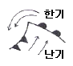
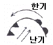
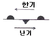
(정답률: 54%)
85. 우리나라에서 북동풍이 불게 되는 기압배치는?
- 서고동저
- 동고서저
- 북고남저
- 남고북저
(정답률: 67%)
86. 다음 기단(氣團)중에서 가장 한냉하고 습한 것은?
- cPk 기단
- mTw 기단
- mPw 기단
- cT 기단
(정답률: 80%)
87. 일기 부호에서 '≡' 은 무엇을 나타내는가?
- 가랑비
- 눈보라
- 안개
- 운량
(정답률: 100%)
88. 고층기상 전문의 일부분이다. 850 hPa 면의 기온은?
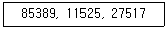
- -2.5 ℃
- -2.7 ℃
- -5.3 ℃
- -11.5 ℃
(정답률: 54%)
89. 자유대류고도(LFC)를 구할 때 쓰인 단열선도 상에서의 곡선은?
- 건조단열선, 등온선
- 혼합비선, 등압선
- 노점온도선, 온위선
- 습윤단열선, 상태곡선
(정답률: 86%)
90. cyclolysis란 말은?
- 저기압의 정지상태를 말한다.
- 온대성 저기압을 말한다.
- 저기압의 소멸과정을 말한다.
- 저기압의 발달과정을 말한다.
(정답률: 86%)
91. 다음의 운형 변화 중 차차 저기압권내로 들어가고 있는 상태를 나타낸 것은?
- Cc → Cu → Cb
- St → Ac → Sc
- Cs → As → Ns
- Ac → St → Ns
(정답률: 89%)
92. 공기덩이(air parcel)는 형태 및 부피의 변화 없이, 그리고 회전운동을 하지 않고 이동할 수 있는데 이런 운동을 무엇이라 하는가?
- 전이운동(transition)
- 회전운동(rotation)
- 변형운동(deformation)
- 발산운동(divergence)
(정답률: 74%)
93. 현재일기(ww)의 숫자부호 30 ~ 39는 무엇을 나타내는가?
- 안개
- 먼지보라
- 이슬비
- 뇌우
(정답률: 78%)
94. 일기 부호 중 소낙성 눈을 나타내는 것은?
(정답률: 100%)
95. 장마전선에 관한 설명 중 틀린 것은?
- 일종의 정체 전선이다.
- 위치를 파악할 때 지상의 노점온도, 850 hPa의 전선대, 제트기류 등을 사용한다.
- 저기압이 장마전선을 거느리고 진행하면 전면에서는 날씨가 비교적 좋고, 후면에서는 날씨가 악화된다.
- 장마 말기에 기압골이 통과하거나, 태풍이 북상하게 되면 장마전선이 북상하여 종료되기도 한다.
(정답률: 85%)
96. 전선면 경사각의 성징레 해당되지 않는 것은?
- 온도차에 비례
- 코리올리 인자에 비례
- 풍속차에 비례
- (1/중력가속도)에 비례
(정답률: 36%)
97. 한냉한 기류가 남하할 때 주로 나타나는 구름은?
- 적운계 구름
- 층운계 구름
- 적운계와 층운계 구름이 공존
- 상층운
(정답률: 88%)
98. 태풍의 진로에 관한 설명 중 틀린 것은?
- 북태평양 고기압을 오른쪽에 두고, 그 주변을 따라 움직인다.
- 기압 하강이 큰 쪽으 향해 움직인다.
- 상층에 기압골이 있으면 이 기압공를 타고 전향한다.
- 온도 경도가 작은 쪽으로 움직인다.
(정답률: 89%)
99. 지상일기도에서 기압경도력은 등압선의 어떠한 방향으로 작용하는가?
- 평행한 방향으로
- 직각 수평 방향으로
- 여직 상부 방향으로
- 45°의 각도를 이루는 방향으로
(정답률: 86%)
100. 태풍의 구조에 대한 다음 설명 중 틀린 것은?
- 등압선은 거의 원형이다.
- 기압경도는 중심으로 갈수록 작아진다.
- 구름은 나선상으로 중심을 둘러싸고 있다.
- 강한 비바람을 동반한다.
(정답률: 89%)